20251027
1. rebuilding of ipp-usb
Create a debian11's docker for fetching src package:
mkdir debhelper
apt source debhelper
mkdir ronn
apt source ronn
mkdir goipp
apt source golang-github-openprinting-goipp-dev
mkdir ipp
apt source ipp-usb
Tar the directory, then transfer the tar.gz to kylin.
Install some packages for building:
sudo apt install build-essential devscripts fakeroot
Build ronn:
tar xzvf ronn.tar.gz
cd ronn
sudo apt build-dep .
debuild -us -uc
cd ..
sudo apt install ./ronn_0.9.1-2_all.deb ./ruby-ronn_0.9.1-2_all.deb
Build debhelper:
cd debhelper
sudo apt build-dep .
debuild -us -uc
cd ..
sudo apt install ./debhelper_13.3.4_all.deb ./libdebhelper-perl_13.3.4_all.deb
Build golang-github-openprinting-goipp-1.0.0:
sudo apt build-dep .
debuild -us -uc
cd ..
sudo apt install ./golang-github-openprinting-goipp-dev_1.0.0-1_all.deb
Build ipp-usb:
sudo apt build-dep .
debuild -us -uc
cd ..
sudo apt install ./ipp-usb_0.9.17-3_amd64.deb
Verification:
$ dpkg -l | grep ipp-usb
ii ipp-usb 0.9.17-3 amd64 Daemon for IPP over USB printer support
2. rebuild ipp-usb for uos
should add gen2deb, also you have to edit the building steps:
# vim gen2deb-1.4/debian/rules
......
$(ruby_versions):
ifeq (,$(filter nocheck,$(DEB_BUILD_OPTIONS)))
# NO_PKG_MANGLE=1 only useful on Ubuntu buildds, to disable pkgbinarymangler
#NO_PKG_MANGLE=1 $@ -S rake test:unit TESTOPTS=-v
@echo "fuckfuckfuck"
else
@echo "Skipping tests for $@ as DEB_BUILD_OPTIONS contains 'nocheck'"
endif
3. verification
kylin/uos, only install ipp-usb package, is enough for use ipp.
4. lenovo old printer(uos)
Under UOS:
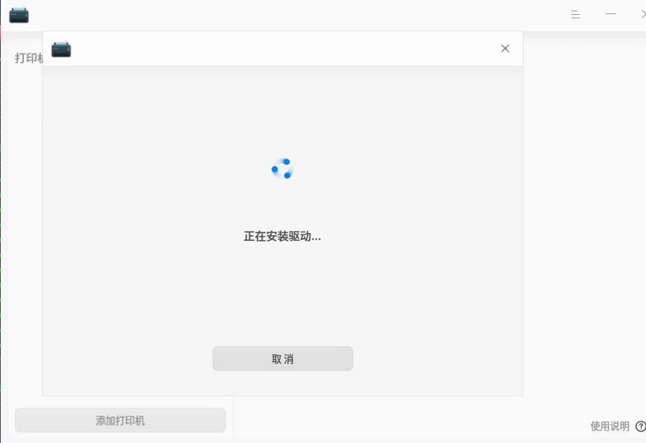
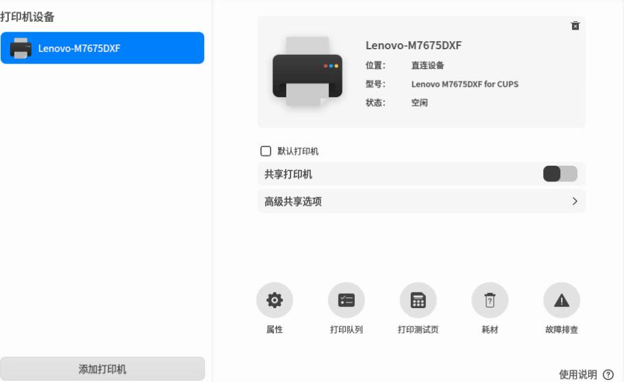
lpstat -p -d result:
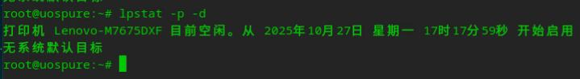
scanner driver:
root@uospure:~/lenovo/LJ24_LJ26_M74_M76系列/扫描驱动/UOS# apt install ./signed_com.lenovo.lenovoscan3_1.2.9-4_amd64.deb
root@uospure:~/lenovo/LJ24_LJ26_M74_M76系列/扫描驱动/UOS# scanimage -L
device `lenovo3:bus1;dev1' is a Lenovo M7675DXF USB scanner
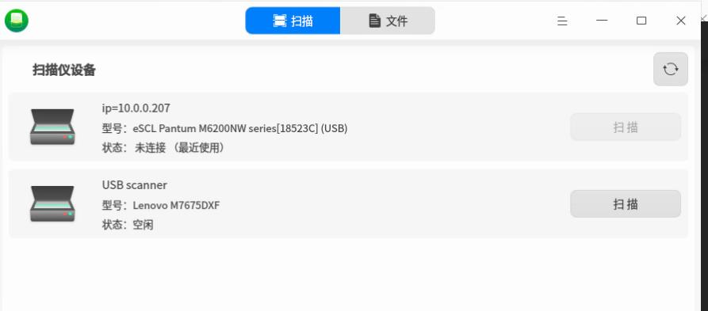
5. lenovo old printer(kylin)
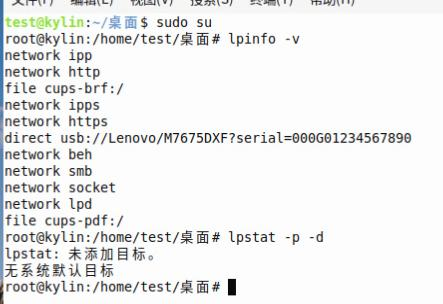
Trying to add driver:
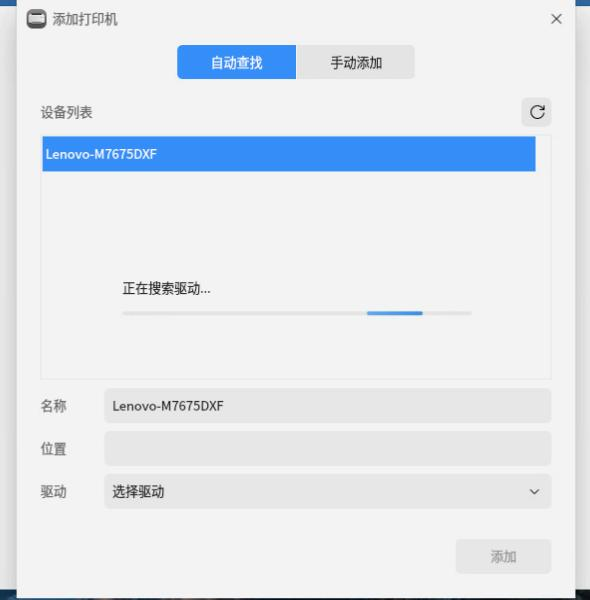
Search result:
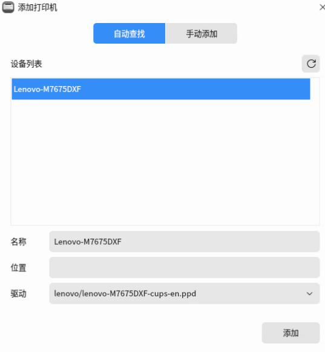
After installed driver:
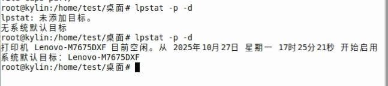
Scanner is also installed along with printer driver.

but with no scanner:
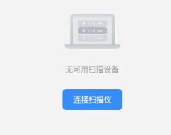
using scanimage under command line:
# scanimage -d 'lenovo3:bus1;dev1' --format=png>111.png
scanimage: rounded value of br-x from 215.9 to 215.88
scanimage: rounded value of br-y from 355.6 to 355.567
Which under the scence:
root@kylin:/home/test# dpkg -l | grep -i lenovo
ii com.lenovo.lenovoprints 5.0.1-2 amd64 printer driver (lpd/cups)
ii com.lenovo.lenovoscan3 1.2.6-0 amd64 scanner driver
6. lenovo old printer(zkfd)
Automatically ask for installing driver:
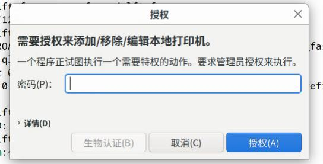
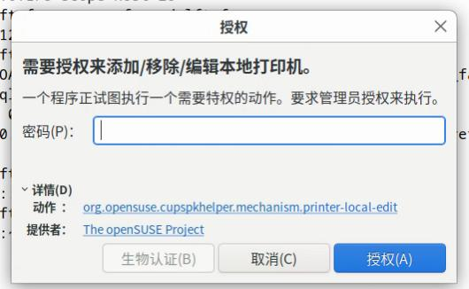
root@zkfdfupan:/home/test# lpstat -p -d
lpstat: 未添加目标。
无系统默认目标
root@zkfdfupan:/home/test# dpkg -l | grep -i lenovo
root@zkfdfupan:/home/test# lpstat -p -d
打印机 M7675DXF 从 2025年10月27日 星期一 17时30分58秒 开始被禁用 -
未知原因
无系统默认目标
root@zkfdfupan:/home/test# sudo dpkg -l | grep -i lenovo
root@zkfdfupan:/home/test# sudo lpstat -p -d
打印机 M7675DXF 目前空闲。从 2025年10月27日 星期一 17时31分42秒 开始启用
Driver:
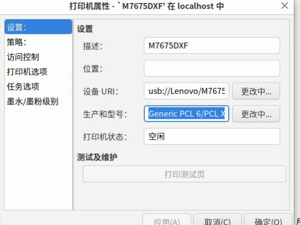
Install via:
root@zkfdfupan:/home/test/LJ24_LJ26_M74_M76系列/打印驱动/麒麟V10# apt install ./com.lenovo.lenovoprints_5.0.3-2_amd64.deb
Delete it and add it again.
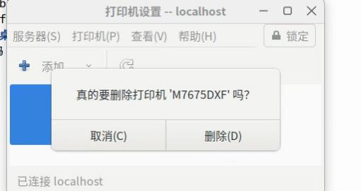
Add:
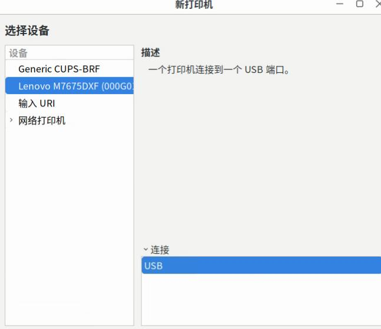
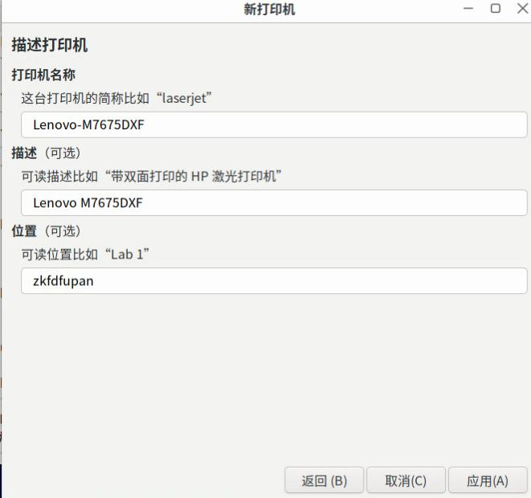
Driver:
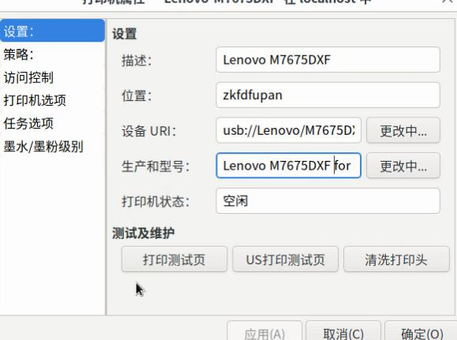
scanner:
root@zkfdfupan:/home/test/LJ24_LJ26_M74_M76系列/扫描驱动/麒麟v10 sp1# apt install ./com.lenovo.lenovoscan3_1.2.9-4_amd64.deb
examine:
root@zkfdfupan:~# scanimage -L
device `lenovo3:bus2;dev1' is a Lenovo M7675DXF USB scanner
Simplescan cannot find it.
# scanimage -d 'lenovo3:bus2;dev1' --format=png>111111.png
scanimage: rounded value of br-x from 215.9 to 215.88
scanimage: rounded value of br-y from 355.6 to 355.567